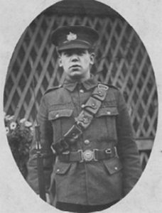
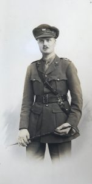
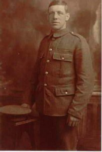
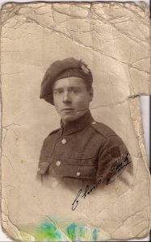
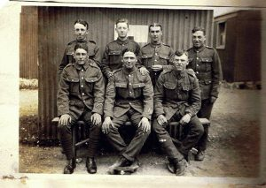
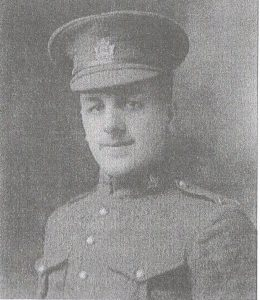
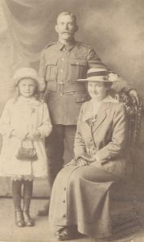
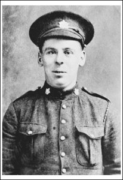
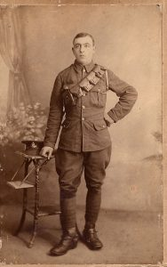
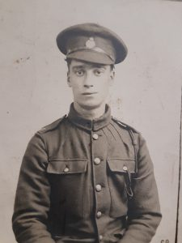

The Virtual Frontline Walk 2018

The stories

Jackson Bacon
Service Number: 3576
11th Essex Regiment
Private Jackson Bacon, born in 1895, enlisted at Warley in Essex. He was killed in action on the 28th June 1917 near Loos, France.

Percy Bentley
5th Battalion, King’s Own Yorkshire Light Infantry
Captain Percy Bentley served in the King’s Own Yorkshire Light Infantry from 1909. When the First World War broke out he was sent to France with his battalion in April 1915, in the 148th (3rd West Riding) Brigade of the 49th (West Riding) Infantry division. He was awarded the Military Cross (MC) on no less than four occasions, and also received his first Bar in September 1918, a second Bar in November 1918, and a third Bar in January 1919 for his actions at the Battle of Havrincourt in September 1918.

Service Number: TZ/2343
Royal Navy Volunteer Reserve, Hawke Battalion
5th Battalion, King’s Own Yorkshire Light Infantry
Able Seaman Frederick “Syd” Cyril was born on 27th August 1881 and enlisted in the Royal Navy Volunteer Reserve service on 12th December 1914, aged 33, when he joined Collingwood Battalion in which he served until June 1915. Following this he served in Anson Battalion in Gallipoli, Nelson Battalion with the British Expeditionary Force (BEF), and finally Hawke Battalion, also with the BEF before sadly being killed in action near Arras on 29th September 1918. His body was never recovered. He was awarded the Military Medal posthumously for “Bravery in the Field” in February 1919. His name can be found on the Vis-en-Artois Memorial.
Fredrick Cyril Driffill
Service Number: TZ/2343
Royal Navy Volunteer Reserve, Hawke Battalion
Able Seaman Frederick “Syd” Cyril was born on 27th August 1881 and enlisted in the Royal Navy Volunteer Reserve service on 12th December 1914, aged 33, when he joined Collingwood Battalion in which he served until June 1915. Following this he served in Anson Battalion in Gallipoli, Nelson Battalion with the British Expeditionary Force (BEF), and finally Hawke Battalion, also with the BEF before sadly being killed in action near Arras on 29th September 1918. His body was never recovered. He was awarded the Military Medal posthumously for “Bravery in the Field” in February 1919. His name can be found on the Vis-en-Artois Memorial.

John Fergusson Bruce Fraser
Service Number: 14158
16th Highland Light Infantry
Born in 1898, Private John F B Fraser joined the Highland Light Infantry (HLI) when the call for more troops came in 1915. His battalion was known as “The Boys Brigade” Battalion, as it was made up of former and serving members of the Boys Brigade in and around Glasgow. He fought at the Somme, Beaumont, Hammel, Nieuport, Fayet, Passchendaelle, Cambrai, Baupaume, and Amiens. His main role was as a runner, caring for the horses, but he was deeply sad after his beloved horse “Captain” was killed.

Harry Haycock
Royal Worcestershire
Private Harry Haycock, born 14 January 1898, served in the Royal Worcestershire Regiment. He came back from the war “remote and never spoke of what he saw”. He remained proud and patriotic to the end.

Frank Sydney Keeble
8th Canadian Mounted Rifles
Born on 3rd December 1894, Private Frank Sydney Keeble volunteered for service while living in Canada. He had been sent there as a child by Barnardos as he had been orphaned. He returned to live in Kelvedon, Essex, after the war. He married, and had one son and one daughter. He died just six weeks following the birth of his son in 1923, just 27 years old.

Sidney James King
Service Number: G29945
Second Battalion, The Middlesex Regiment
Sidney James King was born on 3rd June 1883. He survived a gunshot to the knees as well as a gas attack before being invalided out of the army in 1917. He lived with his injuries until 1937.

William Johnstone Milne VC
16th Battalion Canadian Scottish, Canadian Expeditionary Force
Born 21st December 1892, Private William Johnstone Milne VC was an extremely brave man who twice used grenades to stop German machine gun crews from firing on his compatriates. Sadly, he was known to have been killed by enemy shortly after these brave actions which saved numerous men, and in the activity that followed, his body was lost. This was close to where the Vimy Ridge Memorial now stands.
The following citation was published in the London Gazette on 8th June 1917:
'For most conspicuous bravery and devotion to duty in attack. On approaching the first objective, Pte. Milne observed an enemy machine gun firing on our advancing troops. Crawling on hands and knees, he succeeded in reaching the gun, killing the crew with bombs, and capturing the gun. On the line re-forming, he again located a machine gun in the support line, and stalking the second gun as he had done the first, he succeeded in putting the crew out of action and capturing the gun. His wonderful bravery and resource on these two occasions undoubtedly saved the lives of many of his comrades. Pte. Milne was killed shortly after capturing the second gun.'

George John Page
Service Number: 81084
Royal Field Artillery and Royal Horse Artillery
Born in Erith in 1894, Driver George John Page enlisted in Woolwich, and served in France and Flanders. He is believed to have been killed at the second Ypres, most likely from a Chlorine Gas attack on 3rd May 1915, aged 21. He was awarded 15 Star, Victory, and British Medals. He is commemorated at the Menin Gate.

Benjamin Southwell
Service Number: SE/2264
Royal Veterinary Corps
Private Benjamin Southwell served in Le Harve tending the horses, mules, and pigeons, during World War One. His great, great, grand daughter is now completing her veterinary training.